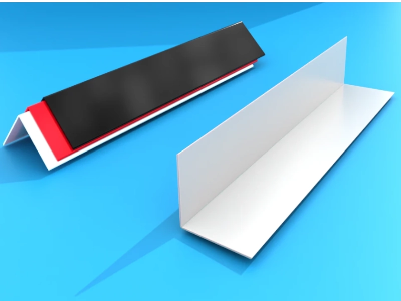
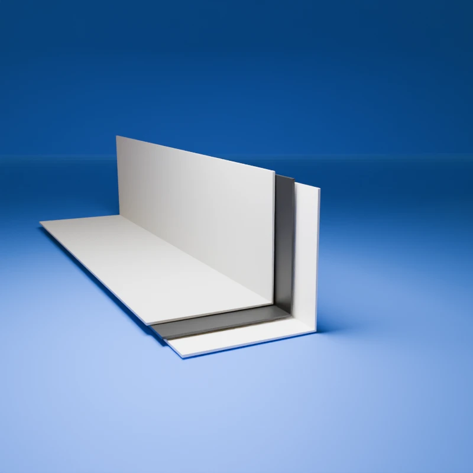
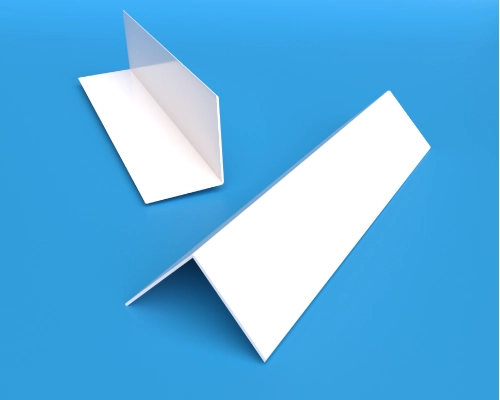
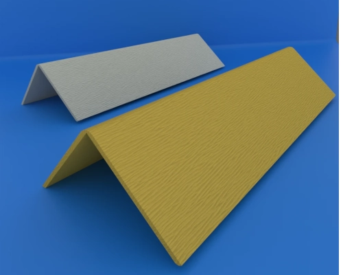

Profesyonel Plastik Köşebent Çözümleri
Mobilya, inşaat ve endüstriyel uygulamalar için yüksek kaliteli, dayanıklı ve estetik plastik köşebentler
Ürünleri İncele
Neden Bizi Tercih Etmelisiniz?
Yüksek Kalite
Birinci kalite hammaddelerden üretilen dayanıklı ürünler. Detaylı bilgi için plastik köşebent adresini ziyaret edebilirsiniz.
Geniş Ürün Yelpazesi
Farklı boyutlarda ve özelliklerde köşebent seçenekleri. Tüm ürün gamımız için 30x30 mm plastik köşebent sayfamızı inceleyin.
Hızlı Teslimat
Stoktan hızlı teslimat ve güvenilir lojistik. Siparişleriniz hakkında bilgi için iletişim sayfamızı ziyaret edin.
Teknik Destek
Uzman ekibimizden teknik destek ve danışmanlık. Uygulama örnekleri için 40x40 mm plastik köşebent bölümümüzü inceleyebilirsiniz.
Popüler Ürünlerimiz

L Tipi Köşebent
90 derece köşeler için ideal çözüm
₺15,90
T Tipi Köşebent
T bağlantılar için mükemmel seçenek
₺18,50
Düz Köşebent
Geniş kullanım alanı
₺12,75
Ayarlanabilir Köşebent
Esnek kullanım imkanı
₺22,00Projeniz İçin İdeal Çözümü Arıyor musunuz?
Uzman ekibimiz size en uygun ürün seçeneklerini sunmaya hazır
İletişime Geçin